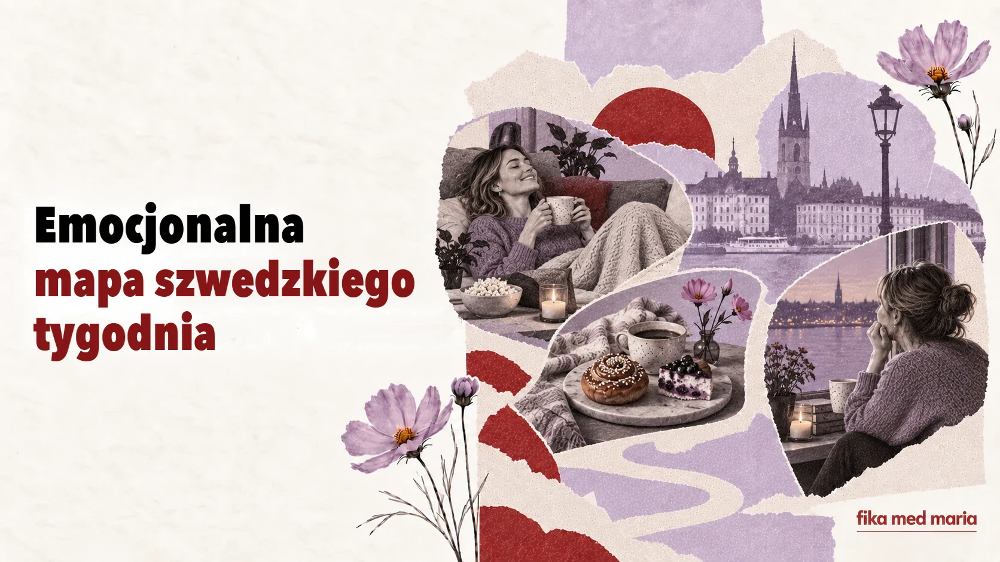

Od fredagsmys do söndagsångest: emocjonalna mapa szwedzkiego tygodnia

Kalendarz pokazuje dni. Język pokazuje, czego od nich oczekujemy.
W szwedzkim są słowa i zwyczaje, które tworzą emocjonalny scenariusz tygodnia: mała środa, przytulny piątek, sobotnie słodycze i niedzielny niepokój. Razem opowiadają o szwedzkiej codzienności więcej niż lista oficjalnych świąt.
Måndag: zacząć od nowa
Poniedziałek tradycyjnie uchodzi za ciężki dzień.
Det känns verkligen som måndag.
Dziś naprawdę czuć, że to poniedziałek.
Jeśli ktoś zapyta Hur är läget?, zupełnie naturalna będzie odpowiedź:
Jo då, lite trött bara. Det är ju måndag.
Wszystko okej, tylko trochę zmęczona. Przecież to poniedziałek.
Partykuła ju tworzy tu poczucie wspólnego rozumienia: oboje wiemy, że poniedziałek wszystko tłumaczy.
Lillördag: mała sobota w środku tygodnia
Środę czasem nazywa się lillördag – mała sobota. Wyjaśnienia historyczne mogą się różnić, ale we współczesnym użyciu to słowo często oznacza okazję, żeby w środku tygodnia zrobić coś przyjemniejszego i bardziej odświętnego: spotkać się z kimś, gdzieś wyjść albo pozwolić sobie na lampkę wina.
Ska vi gå ut? Det är ju lillördag.
To nie jest obowiązkowy ogólnokrajowy rytuał. Raczej rozpoznawalna kulturowo nazwa, którą można żartobliwie usprawiedliwić środę zachowującą się jak sobota.
Torsdag: prawie piątek
Czwartek często upływa w oczekiwaniu na weekend. W tradycyjnej kuchni kojarzy się z zupą grochową i naleśnikami – ärtsoppa och pannkakor.
W dzisiejszych rozmowach ważniejsze jest inne odczucie:
Snart är det helg.
Niedługo weekend.
To proste zdanie, ale pokazuje, jak tydzień już skręca w stronę odpoczynku.
Fredagsmys: przytulność jako plan
Fredagsmys składa się z fredag i mys. To nie tylko „przytulny piątek”, ale rozpoznawalny sposób na zakończenie tygodnia: dom, proste jedzenie, przekąski, film, rodzina lub bliscy.
Vi ska bara vara hemma och ha fredagsmys.
Po prostu zostaniemy w domu i urządzimy sobie przytulny piątkowy wieczór.
Słowo bara nie odbiera tu planowi wartości. Wręcz przeciwnie: po tygodniu pracy „po prostu być w domu” może być dokładnie tym, na co ma się największą ochotę.
Lördagsgodis: słodycze według harmonogramu
Lördagsgodis – sobotnie słodycze, związane zwłaszcza z dziecięcym zwyczajem jedzenia słodkości właśnie w sobotę.
W sklepie można zobaczyć lösgodis – cukierki na wagę, z których każdy komponuje własną mieszankę. Dla dziecka sam wybór może być rytuałem, a dla dorosłego – nostalgią.
Przydatne zwroty:
Får jag välja lördagsgodis?
Czy mogę wybrać sobotnie słodycze?
Vilken är din favorit?
Który lubisz najbardziej?
Söndagsångest: gdy weekend jeszcze się nie skończył, ale już się kończy
Söndagsångest – niedzielny niepokój przed nowym tygodniem pracy lub nauki.
Może to być prawdziwy, silny niepokój albo półżartobliwa niechęć do rozstawania się z weekendem.
Jag får alltid lite söndagsångest på kvällen.
Wieczorem zawsze pojawia się u mnie odrobina niedzielnego niepokoju.
Zwróć uwagę na lite: łagodzi wypowiedź i nadaje jej potoczny charakter.
Po co uczyć się takich słów
Nie należą do zestawu „stu słów, bez których nie da się przetrwać”. Ale to właśnie one pomagają przejść od języka funkcjonalnego do społecznego.
Znając fredagsmys, nie tylko rozumiesz to słowo. Rozumiesz też, dlaczego kolega radośnie mówi, że na weekend niczego nie planuje. Znając söndagsångest, możesz podtrzymać lekką rozmowę w poniedziałek.
Dokończ zdania:
- På fredagar brukar jag…
- Mitt perfekta fredagsmys är…
- Jag får söndagsångest när…
- På lördagar vill jag helst…
W materiałach Fika med Maria gramatyka i słownictwo są osadzone w tematach, o których chce się rozmawiać: nawykach, relacjach, pracy, kulturze i życiu codziennym. Materiały i kursy.
Czy wszyscy Szwedzi urządzają fredagsmys?
Nie. To rozpoznawalny zwyczaj kulturowy, a nie obowiązkowa zasada dla każdej rodziny.
Czy söndagsångest to termin medyczny?
W codziennym języku to nieformalna nazwa niepokoju lub nieprzyjemnego uczucia przed nowym tygodniem.